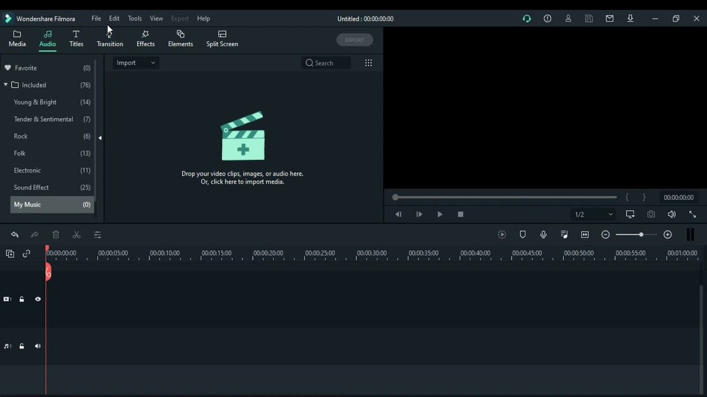

I like to use Filmora X because it has a easy interface to use when you edit videos. You can add multiple videos and audio down to the timeline very easily.
In Filmora X, it has audio already in the editor. It also has templates already made for you to use. What I also like about Filmora X is that there is tons of effects already in the editor for you to use so you don't have to download anything!
Importing other videos audio is so easy with Filmora.
Starting to use Filmora
Create a folder for each to store edited videos and unedited videos.
Organize your videos so you can find them easy.
Notes
Everytime you want to edit a new thing,(videos, audio, etc.) you must create a new project.
Filmora X interface

Editing a video
Create a project.
Import everything you want to edit.
Drag the first thing you want to edit on to the timeline.(videos, audio, etc.)
Cut down the video how much you want to.
Add effects, audio or elements if you want.
Export the video to a folder where you can find it.